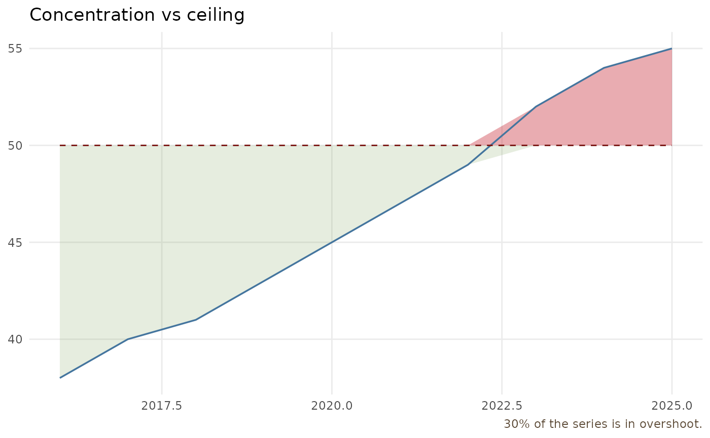

Assembles a complete, lightly themed plot around geom_boundary() for users
who want a figure in one call rather than composing layers. The share of the
series spent in overshoot is reported in the caption.
Arguments
- data
a data.frame.
- x, value, boundary
column names (character) in
data.boundarymay instead be a single numeric value for a fixed ceiling.- title, y_lab
optional plot title and y-axis label.
- ...
passed to
geom_boundary().
Examples
df <- data.frame(year = 2016:2025,
hhi = c(38,40,41,43,45,47,49,52,54,55), cap = 50)
boundary_plot(df, "year", "hhi", "cap", title = "Concentration vs ceiling")
